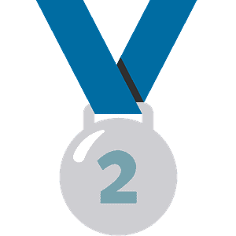

| Медаль | Спортсмен | Вид спорту | Дисциліна | Медаль |
|---|---|---|---|---|
 Золото Золото |
Жан Беленюк | Греко-римська боротьба | до 87 кг | 4 серпня |
|  Срібло | Михайло Романчук | Плавання | 1500 метрів вільним стилем | 1 серпня |
| Срібло | Парвіз Насібов | Греко-римська боротьба | до 67 кг | 4 серпня |
| Срібло | Анжеліка Терлюга | Карате | до 55 кг | 5 серпня | Срібло | Людмила Лузан | Веслування на байдарках і каное | каное-двійки, 500 метрівг | 7 серпня | Срібло | Анастасія Четверікова | Веслування на байдарках і каное | каное-двійки, 500 метрівг | 7 серпня | Срібло | Олександр Хижняк | Бокс | до 75 кг | 7 серпня | Срібло | Олена Старікова> | Велоспорт | спринт | 8 серпня | Бронза | Дар'я Білодід | Дзюдо | до 48 кг | 24 липня | Бронза | Ігор Рейзлін | Фехтування | індивідуальна шпага | 25 липня | Бронза | Олег Омельчук | Стрільба | пневматичний пістолет, 10 метрів (мікст) | 27 липня | Бронза | Олена Костевич | Стрільба | пневматичний пістолет, 10 метрів (мікст) | 27 липня | Бронза | Михайло Романчук | Плавання | 800 метрів вільним стилем | 29 липня | Бронза | Еліна Світоліна | Теніс | одиночний розряд | 31 липня | Бронза | Алла Черкасова | Вільна боротьба | до 68 кг | 3 серпня | Бронза | Анастасія Савчук | Синхронне плавання | дуети | 4 серпня | Бронза | Марта Фєдіна | Синхронне плавання | дуети | 4 серпня | Бронза | Ірина Коляденко | Вільна боротьба | до 62 кг | 4 серпня | Бронза | Людмила Лузан | Веслування на байдарках і каное | каное-одиночки, 200 метрівг | 5 серпня | Бронза | Станіслав Горуна | Карате | до 75 кг | 6 серпня | Бронза | Анастасія Савчук | Синхронне плавання | групи | 7 серпня | Бронза | Марта Фєдіна | Синхронне плавання | групи | 7 серпня | Бронза | Єлизавета Яхно | Синхронне плавання | групи | 7 серпня | Бронза | Владислава Алексіїва | Синхронне плавання | групи | 7 серпня | Бронза | Марина Алексіїва | Синхронне плавання | групи | 7 серпня | Бронза | Ксенія Сидоренко | Синхронне плавання | групи | 7 серпня | Бронза | Катерина Резнік | Синхронне плавання | групи | 7 серпня | Бронза | Аліна Шинкаренко | Синхронне плавання | групи | 7 серпня | Бронза | Ярослава Магучіх | Легка атлетика | стрибки у висоту | 7 серпня |